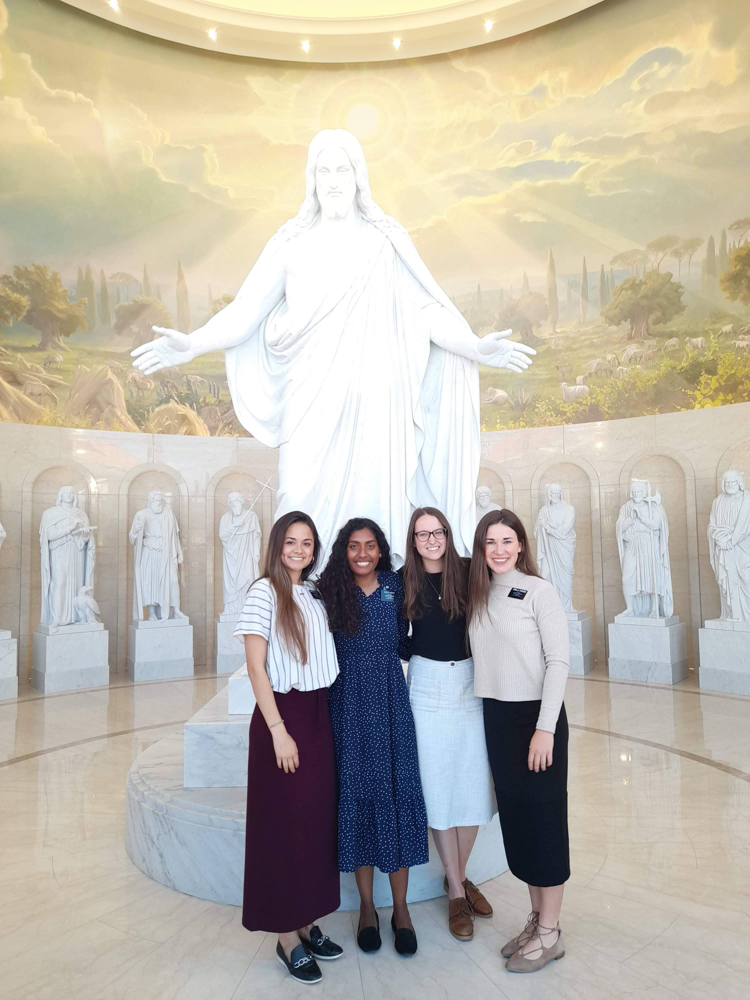

In January of 2021, I arrived in Rome, Italy ready to embark on an eighteen month period of volunteer work for the Church of Jesus Christ of Latter-Day Saints. This volunteer work entailed teaching others in the Italian language and volunteer manual labor. I was to be placed in different cities throughout southern Italy for a minimum of six weeks at a time and given a "companion." This companion was a volunteer just like me who I did not know and that potentially came from a different country. We were to do everything together: teach, work, eat, etc..
My first assignment was in Rome. As was promised, I was given a companion by the name of Anna Debiasi. Anna was from Bolzano, a small city in northern Italy. We lived with another companionship, one named Luzy from San Diego and the other named Genesis from Ecuador. I was entirely unsure of how this setup would play out.
As obvious differences arose among the four of us (an Italian, Californian, Ecuadorian, and Arizonan), I came to the realization that in order for us to function in our work fully, we were going to need to get to know eachother.
So I began asking questions.
To Be Heard
As I came to know each one of these amazing women on a deeper level, I appreciated them more. I appreciated their perspectives and ideas, despite the fact that they differed from mine. When we can hear those around us with genuine interest, only then can things work for the good of everyone.
There's power in being heard.
In the New Testament, Jesus Christ teaches that we should love our neighbor as ourselves. When asked "who is my neighbor?" Jesus teaches that anyone we come in contact holds that definition. While we should treat everyone with dignity and respect upon interacting with them, I think Jesus was implying something more. We should make everyone our neighbor by getting to know our neighbor. We should get to know them in order to love them--in order to hear them.
Unexpected Lessons
Abraham Lincoln once said, "I do not like that man. I must get to know him better." I got to know these women better. Despite our differences, we became the best of friends and some of the most effecient, hardworking volunteers in all of southern Italy. And I'm convinced that it all happened as a result of our hard-earned unity as a group.
 From left to right: Luzy, Genesis, Anna, AbigailAny organization that deals with people should adopt this relationship-centric ideology. Valued, happy people work hard. I'm so grateful for this lesson I learned during my time in Rome.